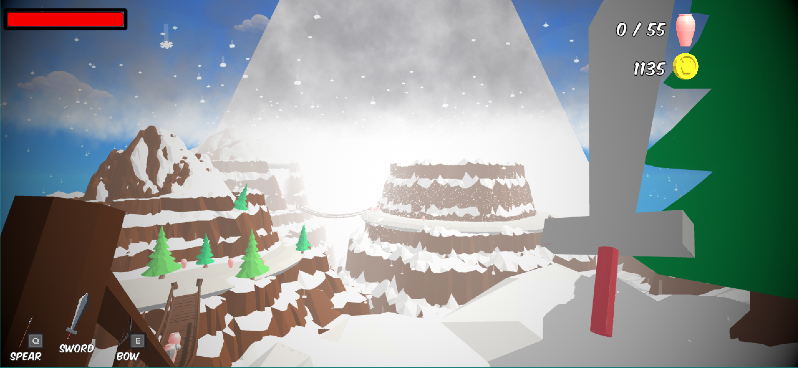

I'm only going to showcase the levels that I am most proud of or had a direct hand in creating. Like the tutorial level, this is one of the first things the player gets to see when they enter the game.
This is the first level of the game after the tutorial. I wanted to the player used to the cannons, and the general flow of combat. This is level one it should ease the player into the game.
This is an island on the second level, it showcases the way that the pots break and shatter. I also have it to show off that I designed every island to be special and unique. Every island in both these levels are different.
This is on the second level and I wish I could've spent more time here making the lines of sight more interesting. I don't have as many scenery islands as I would've liked but its still a fun level.
This is still the second level but from a lower island. I wanted to show this side of the level because it's again a unique island, and it shows some of our level elements, like the cannons and levers.
This is my favorite room on level 2-1. World 2 is a dungeon theme. So, we made these cute little pillars and chains for the walls. This room is just so cute and bright in an otherwise dark level.
This is just another example of World 2, this is a little bit later in the level. We still use the levers but this time the move walls to open new passages. We made it very clear which walls can move compared to the normal walls.
This is the ending of 2-2, there would be a neat little portal in the center of the screen if I cleared the level before taking the screenshot, but I think the room still looks nice from the outside without the level being done.

This is 3-1. We tried something different with the World 3 levels, we tried to make them really flow together. The end of this level is the base of the mountain, the next one is climbing the mountain, the last one is a mountain top duel.
This is a shot from 4-1 to show off our lighting. We made the lava super bright and we made it affect the pots. It gives them a really cool effect of almost glowing.
I brought the player outside the map for this shot to show off the winding jumping paths that fill up our lava levels. Both 4-1 and 4-2 have a lot of risky feeling jumps and corners to block lines of sight.
This shot is taken in editor because I really wanted to showcase this part. This is easily my favorite part of the game. The player is climbing down these pillars and all the pots in this section have projectiles so the player is falling down rocks and getting shot at and it always feels powerful to playthrough.
Game Thoughts
This was a 10 week project I had the honor of leading. We were a 5 man team. Like I said somewhere else this is a collect-a-thon type of game, the goal is to collect/smash every pot that you see. The game has a bunch of different weapons to use throughout the playthrough.